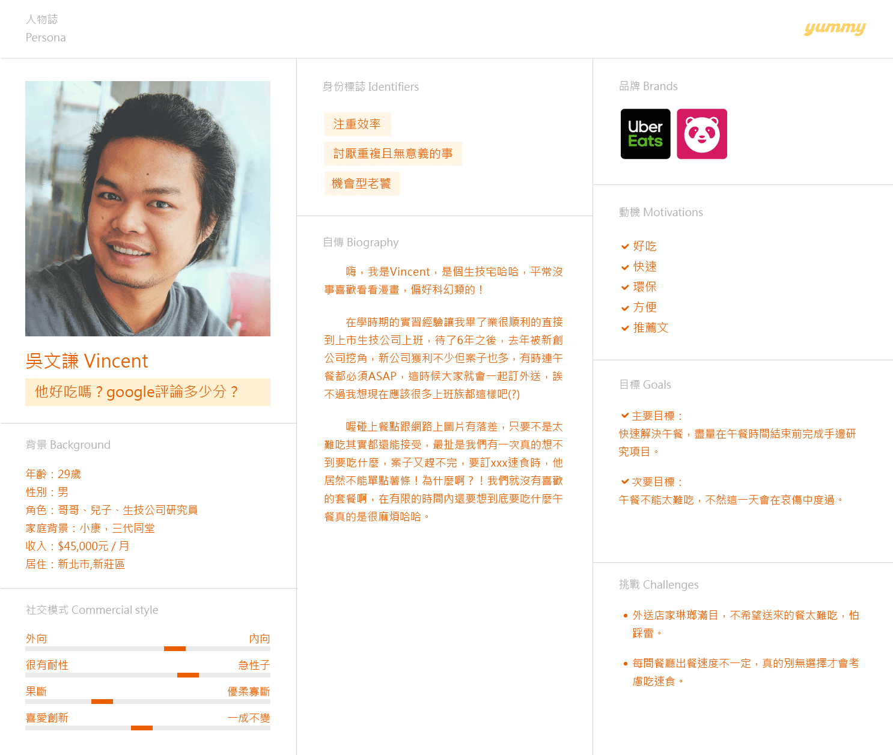
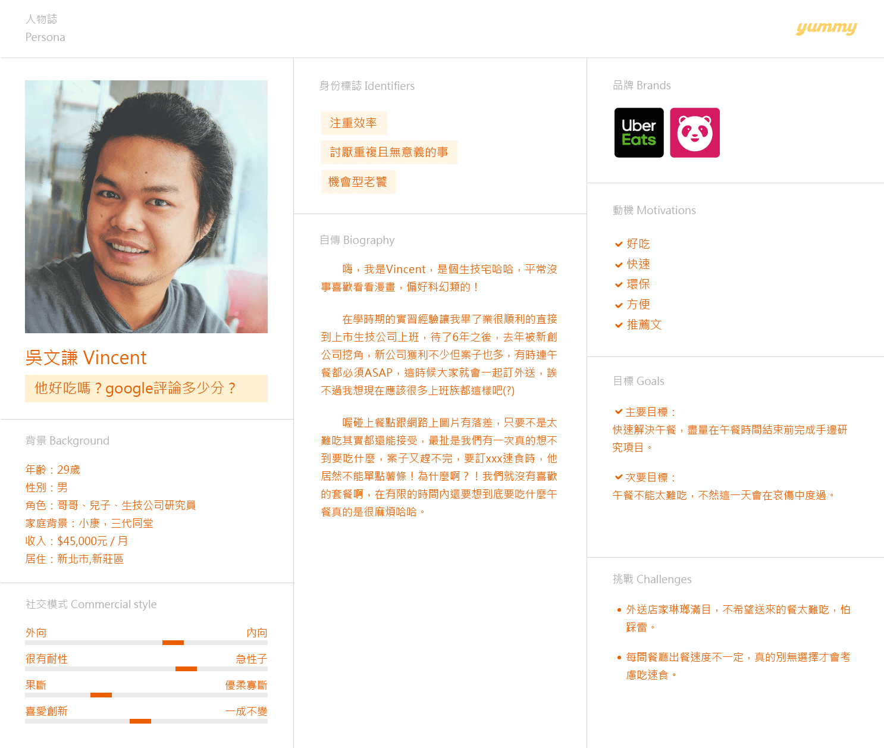
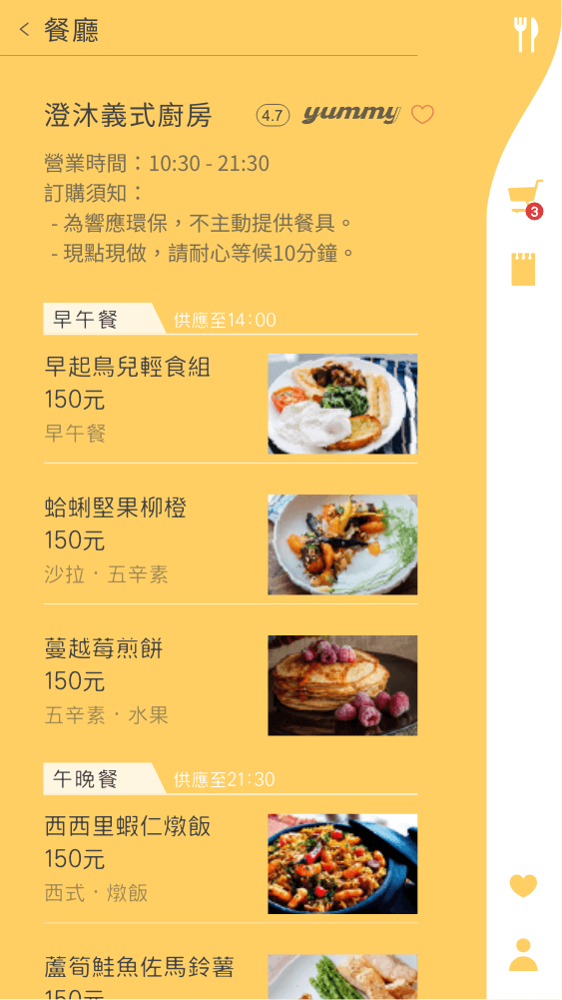
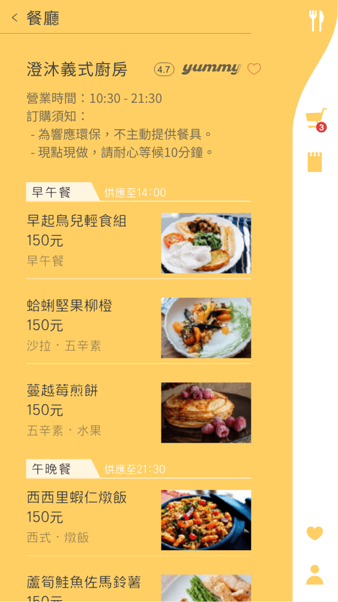

林伊珞
-

- 資策會教育研究所 2018 - 2019 WEB UI / UX 前端工程師養成班
- 台灣藝術大學 2012 - 2017 工藝設計學系 / 書畫藝術學系 雙主修

UIUX 設計師 艾肯斯創意行銷
2020/1 - 至今
負責項目：
UX 流程規劃 ＆ 使用體驗設計
UI layout 出圖
前端網頁切版
wordpress 網站建置

前端工程師 FD 亞惿網頁設計公司
2019/4 - 2019/11・7個月
2個前端全權開發網站：尚藝國際行銷、凱勝家具、昇恆昌金坊免稅店、東福旅行社。
5個網站維護：牛仔大廠如興、新東陽、秀傳醫療集團、澎澄飯店、超級馬卡龍、門前隱味牛肉麵。
1個SEO網頁優化 聯新醫療集團提升20%網頁速率。
（因部分作品有保密協議，歡迎與我聯繫聊聊，當面展示作品！）
行銷美編 原味時代股份有限公司
2017/12 - 2018/9・10個月
Yahoo、Google、FB、LINE原生廣告製作
多款產品包裝設計
產品拍攝、官方網站設計
cyberbiz電商平台後台操作上架
參與專案:
「愛的寶飽」與家扶、忠義基金會合作募餐活動，募得500份餐點。
嘖嘖募資「低醣生酮餐｜少澱粉的新飲食風潮」
拍攝、網頁視覺設計、募資影片剪輯
https://www.zeczec.com/projects/lowcarb
SOHO 喜寶建設
2017/7 - 2017/9・3個月
CIS設計、飯店總體視覺定調


 



 
